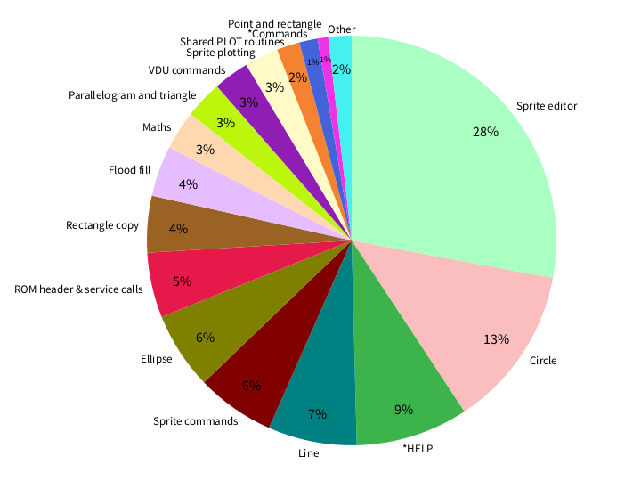

About the Graphics Extension ROM
- §1. The Graphics Extension ROM
- §2. ROM Memory
- §3. History
- §4. Reviews
- §5. Use in other packages
- §6. Incompatibilities
- §7. Alternatives
- §8. Assembly Instructions
- §9. Implementation Notes
- §10. Performance
- §11. Bugs
- §12. Possible future developments
§1. The Graphics Extension ROM.
The Graphics Extension ROM (or 'GXR') provides new graphics primitives, sprite plotting and editing, fill patterns, dashed line patterns, and flood fill. It can also copy or move a rectangle of pixels on screen. The new graphics primitives are: filled rectangles, filled parallelograms, filled circles, circle outlines, arcs of a circle, sectors of a circle, segments of a circle, filled ellipses, and ellipse outlines. Sprite support includes a sprite editor to create sprites for any graphics MODE. A sprite can also be created by capturing a rectangle of pixels from the screen. Sprite plotting has the ability to draw a sprite at any pixel position on screen, clipped to the current graphics window.

The GXR was a project undertaken by Acornsoft's Languages department under Paul Fellows (who had previously written Sphinx Adventure, S-Pascal and others as a student at Cambridge). Having released Lisp, Forth, BCPL, ISO-Pascal (as 2 ROMs), Comal, Logo (2 ROMs), and Prolog, they were running out of interesting languages to implement, so they started releasing utilities, and they needed a new project. The BBC Micro's User Guide had used the phrase 'Reserved for the Graphics Extension ROM' and in finding that this only existed as far as some vague ideas for features, this inspired Paul Fellows to create such a ROM. Acorn (mostly David Seal) came up with a specification for the features, and Acornsoft (mostly Richard Manby) implemented it. Having implemented the ROM for the BBC Micro, the Master was getting close to release so it was decided to absorb the new graphics routines into 8K of the Master's 128K Mega-ROM, and hold off on the release of the BBC Micro GXR until the Master 128 was released. The GXR was officially launched at the Acorn User Show in 1985, for a price of £29.95 (equivalent to around £90 in 2023). The package came with the 16K ROM itself, a user manual, a reference card, a function key strip (for the included sprite editor), and a cassette tape with example programs, a fill pattern editor and a drawing program. A version for the B+ was also created with the same feature set. This supported the Shadow RAM architecture of the B+, meaning any reading or writing to the screen could not be done directly but had to be done by calling into OS routines. According to Paul Fellows, the GXR was a 'real hot seller' since it allowed BBC Micro users to get the same graphics features as the Master. Not all of the GXR features were added to the Master OS. In particular the sprite routines and editor are removed, and put onto a separate 'Spriter' Sideways RAM image supplied on the Master Welcome disc. The 16K Spriter sideways RAM image uses 9K for code leaving the remaining 7K available for storing sprites. Another cut was that the dot-dash line pattern feature is limited to exactly 8 pixels in length on the Master instead of any desired length between 1 and 64 pixels in the GXR. In 2020 the GXR was modified to work on the Electron by SteveF on the Stardot forum (aka ZornsLemma on GitHub). see https://stardot.org.uk/forums/viewtopic.php?p=295211#p295211 and see https://github.com/ZornsLemma/GXR To bring the history up to date, one place where GXR is still used today is the 'BBC Micro Bot'. This is a Twitter and Mastodon account created by Dominic Pajak that automatically replies to BBC BASIC code tweeted or posted to it with a video of it running. In the background it is executing the code in a BBC Micro emulator with the GXR enabled, capturing the output into a video and posting it. See https://www.bbcmicrobot.com Video Much of the preceding history is derived from an excellent talk by Paul Fellows about his time at Acorn and beyond, see https://youtu.be/GLIcJrph2Zw . GXR related content starts at 22 minutes in with a brief memory map refresher. Advert see https://www.4corn.co.uk/archive/docs/AMPAPP/150/APP063%20-%20The%20Graphics%20Extension%20ROM-opt.pdf
All reviews are generally positive in tone. Mark Webb, A&B Computing Aug 1985 see https://archive.org/details/AB_Computing_1985-08_OCR/page/n29/mode/2up Michael Banthorpe, Acorn User Dec 1985 see https://archive.org/details/AcornUser041-Dec85/page/n183/mode/2up Mark Sealey, Beebug Dec 1985 see https://www.computinghistory.org.uk/downloads/14565 (claimed "will also work on the Electron" which was untrue until 2020, see above) Jon Revis, Home Computing Weekly 8 Oct 1985 see https://archive.org/details/home-computing-weekly-133/page/n29/mode/2up Roger Cullis, Practical Computing Magazine Dec 1985 see http://chrisacorns.computinghistory.org.uk/docs/Mags/PC/PC_Dec85_BBCB+128.pdf
Take up of the GXR routines in other commercial software packages for the BBC Micro was limited. Since the GXR was not supplied as standard with the machine, the potential market would have been too small. Watford Electronics' 'ConQuest' graphics package and 'Wapping Editor' used the GXR routines for graphics primitives when available. Also the DDX CAD program from Ibbotsons Design Software, I think. No commercial games used it to my knowledge.
The GXR was written in a compatible way, but some other badly behaved ROMs didn't claim the OSWRCH vector properly or misused *FX 163, requiring them to be in a lower priority ROM socket than the GXR. In particular: * Computer Concepts Wordwise Plus * Computer Concepts Graphics ROM * Computer Concepts Printmaster * Raven-20 (Shadow RAM board) and several other ROMs too, see https://archive.org/details/AcornUser039-Oct85/page/n115/mode/2up
The most common alternative is the Computer Concepts Graphics ROM from 1983. It suffers from a non-standard less idiomatic interface and is a little buggier than the GXR in my (admittedly limited) experience. It uses *commands with the option of using the integer single letter BASIC variables to pass values. So e.g. "*ELLIPSE X%,Y%,..." rather than using additional PLOT types and VDU calls as the GXR does. Stargraph from Slogger also takes the "*ELLIPSE X%,Y%,..." approach. The New Advanced User Guide (see NAUG p295) when describing how to write a ROM takes an uncharacteristic dig at this: "For example let us take a graphics extension ROM. This would be a service ROM because it has to be initialised by using the unknown *command service call (or possibly by the boot program call). However, the actual extension to the graphics commands would be performed by intercepting the VDU extension vector. This would be directed at the ROM code using an extended vector (see section 17.4.3). It would be foolish to call routines by the unknown *command mechanism which then returned values to BASIC by poking into BASIC's single letter integer variable storage space. This is because when a Tube is active the graphics routines would corrupt the Tube routines in the language workspace. It is also foolish not to take advantage of the elegant expansion capabilities which are provided." * Computer Concepts Graphics ROM (1983) see https://stardot.org.uk/forums/viewtopic.php?f=42&t=18614&p=258599 see https://stardot.org.uk/forums/viewtopic.php?t=18614 * Addcomm (Vine Micros, 1984), extending BBC BASIC see https://archive.org/details/AB_Computing_1984-12_OCR/page/n87/mode/2up see https://archive.org/details/AB_Computing_1985-12_OCR/page/n81/mode/2up see https://archive.org/details/AcornUser027-Oct84/page/n157/mode/2up * Stargraph (Slogger, 1985), (also compatible with the Electron) see https://stardot.org.uk/forums/viewtopic.php?p=293889#p293889 see https://archive.org/details/AcornUser042-Jan86/page/n9/mode/2up see https://stardot.org.uk/forums/download/file.php?id=39216&mode=view see http://www.bygonebytes.co.uk/Slogger/Slogger%20Catalogue.pdf (page 16)
This is for the acme assembler. Choose the machine to assemble the GXR for by defining the MACHINE constant via the acme command line, one of: acme -DMACHINE=1000 -o gxr120.rom gxr120_acme.a ; for BBC B acme -DMACHINE=1001 -o gxr200.rom gxr120_acme.a ; for BBC B+ acme -DMACHINE=1002 -o gxr100a.rom gxr120_acme.a ; for Electron
* The VDU vector (OSWRCH) is redirected to detect VDU 22 (MODE) and VDU 25 (PLOT). On a MODE change, the current fill patterns and dot-dash line pattern are reset to defaults. (See .resetFillPatternsAndDotDashPattern) PLOT implements both the new graphics primitives with new plot types, and reimplements the existing PLOT types to implement the new fill patterns and dot-dash line patterns. (See .vdu22Or25EntryPoint). * The OS's Extended VDU Vectors system is used to support new VDU calls. The new VDU calls are used to set options e.g. to set the dot-dash pattern or the fill pattern (see .extendedVectorVDURoutine). The Extended VDU Vectors allow a specific ROM to be called to process new VDU calls. * New star commands and new FX calls are handled by ROM service calls (which is the standard practice). * Memory use: Several zero page addresses are used to store temporary variables that are not preserved between calls to the ROM: The zero page addresses from $A8-AF are available for temporary storage of commonly used variables. The zero page locations that follow apply to the BBC B and B+, because some zero page locations are different on the Electron version (see Chapter 3: Memory locations). The locations $F8,$F9 are used to temporarily store the private workspace address (these two locations are not used by OS 1.20 / 2.00). The locations $DA-$DF are used as temporary variables (.vduTempStoreDA-DF). They are only used by the OS for temporary VDU related storage. A range of the VDU variables in page 3 ($0328 to $0345, see .vduWorkspaceA) are also used as temporary storage during graphics operations. Part of the soft character definitions normally stored at $0c00-$0c66 is copied into private ROM workspace while a PLOT command is happening, then copied back at the end of the PLOT operation. This leaves $0c00 to $0c66 available for easy access (as fixed addresses) during PLOT calculations. The GXR claims private workspace on reset. It uses one page of private workspace for general use, two more pages for use during flood fill (if enabled) and a variable number of pages for sprites (*SSPACE n). * Calls directly into the OS: As well as calling the OS via regular entry points, the GXR calls *directly* into OS code for various functionality. e.g. plotting a horizontal row of pixels. A different GXR ROM is therefore required for each version of the OS. See the 'OS routines and tables' section below for a list of the OS routines used. The BBC B and Electron versions read / write directly to screen memory for plotting lines, flood fill, rectangle copy, plotting sprites, and creating a sprite from screen (*SGET n). This is not possible in the B+ where shadow RAM can be used, so the ROM calls relevant routines in the B+ ROM instead. * Sprites: Sprites are stored (in memory and on disk) with a six byte header: 0: width - 1 (in *bytes*) 1: height - 1 (in pixels) 2: } size in bytes of the sprite data (without this six byte header) 3: } 4: MODE in which the sprite was defined 5: sprite number ... the sprite bytes follow (the bytes are stored *right to left*, top to bottom) It follows that sprites can be 1-255 bytes wide and 1-255 pixels high, limited only by the memory available. No sprite mask facility is provided.
There is a performance overhead to using the GXR for features that the BBC B OS could do on its own. General OSWRCH use is slowed down by around 2%. Triangle drawing is 33% slower, line drawing is 34% slower, point plotting is 83% slower, and MOVE commands are 100% slower. Bear in mind that the GXR adds the dot-dash pattern feature to line drawing and pattern fill to triangle drawing, so sometimes at least we do get something in return for this performance cost. See https://twitter.com/bbcmicrobot/status/1555265674812989441 Some of the overhead (particularly for MOVE) is down to the caching and uncaching of 103 bytes of soft character definitions during each PLOT, which is unnecessary for a simple operation like MOVE. (See .vdu22Or25EntryPoint) Performance overall could be improved, e.g. by using zero page memory during expensive routines like multiply and sqrt. Available zero page memory is a limited resource that can be better used. Faster maths routines are also possible in general. To gain more ROM space, the sprite editor could be moved out of the ROM into a separate executable or ROM which would reclaim lots of useful space for new features or performance improvements. The HELP text is large and uncompressed, so there could be more ROM space to be saved there also (remove or compress it). Throughout the code I have noted a few micro-optimisations (see anything marked as "[NOTE: ...]") that would save memory.
1. Plotting this single large segment takes nearly 7 minutes to finish: 10 REM Requires GXR for BBC B or B+. Takes 6 mins 47 seconds! 20 MODE 0 30 MOVE 32768,512 40 MOVE 32767,32768 50 PLOT&AD,35000,-32767 Almost all the time is spent working out the end point's position on the circle. The circle's radius is defined by the distance of the start point to the centre of the circle. So far so good. But the end point can be any distance from the centre. So the code for a segment plot needs to find the point along the end line that is at the radius of the circle. The code (see .segmentInitialisation and the .calculateEndPointOnCircle loop in particular) moves one pixel at a time along the end line starting from the centre until the distance from the centre is at least that of the circle's radius. So for a large radius circle this is a lot of iterations, where expensive multiplications are used to calculate the radius (squared) on each iteration. 2. In a similar case, but taken to extreme, the following code *never* finishes: 10 REM Requires GXR. Never finishes! 20 MODE 0 30 MOVE -32767,32767 40 MOVE 32767,-32767 50 PLOT&AD,-32767,-32767 Here the delta X is 65534 and delta Y is 65534. Radius squared is therefore 65534^2 + 65534^2 = 8589410312 which doesn't fit in the four byte value available in the code. Even if it did fit, the radius is 92679, which wouldn't fit in the two byte radius variable in the code. 3. There's a bug in the 24 bit x 24 bit multiply routine that produces incorrect results if an input has the top bit set. This may affect very large ellipses. 4. There are cases where flood fill doesn't work. If the pattern we are filling with contains the background colour, the routine may finish early, or (as here) not even fill anything: See https://stardot.org.uk/forums/viewtopic.php?p=341717#p341717 : 10 S=200 20 MODE 1 30 VDU 29,640;512; 40 VDU 23,12,1,1,1,1,0,0,0,0 50 MOVE -S,0 60 DRAW 0,S 70 DRAW S,0 80 DRAW 0,-S 90 DRAW -S,0 100 GCOL 16,0 110 PLOT 133,0,0
§12. Possible future developments.
* Compare with pre-release version 0.37 * Compare with Master code * Track down the "dealer demonstration disc" as referenced in Mark Webb's review in A&B Computing Aug 1985 (see https://archive.org/details/AB_Computing_1985-08_OCR/page/n29/mode/2up ) * it references an animated fountain * shows and references Garfield "as seen in the demos" * "apparently Acornsoft is swimming in discs with examples on" Mark Sealey's review in Beebug Dec 1985 shows: (see https://www.computinghistory.org.uk/downloads/14565 ) * an animated fountain screenshot * clown screenshot (also shown in Practical Computing Magazine Dec 1985) * GXR logo / box screenshot (also shown in Practical Computing Magazine Dec 1985)